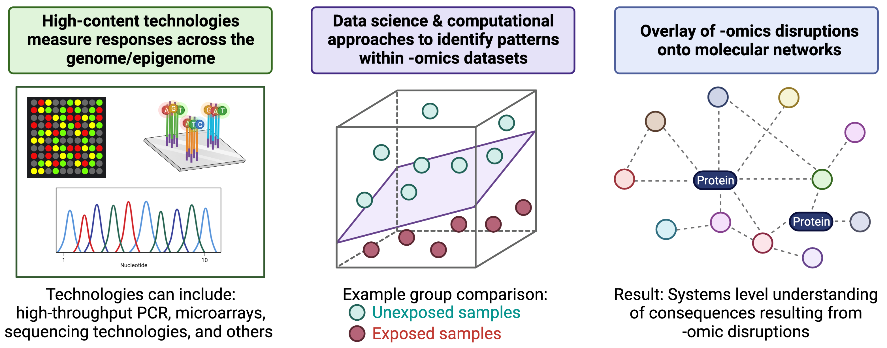
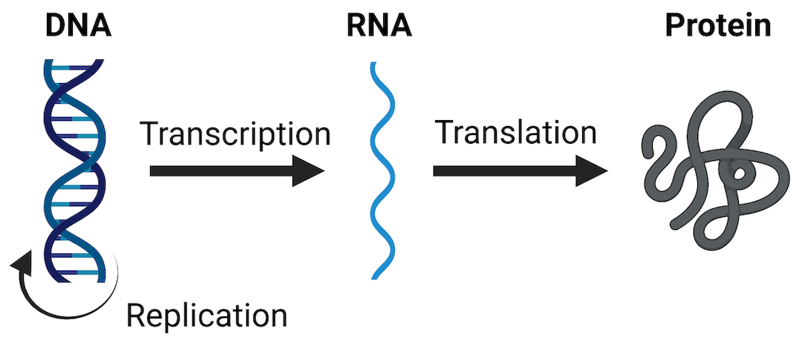
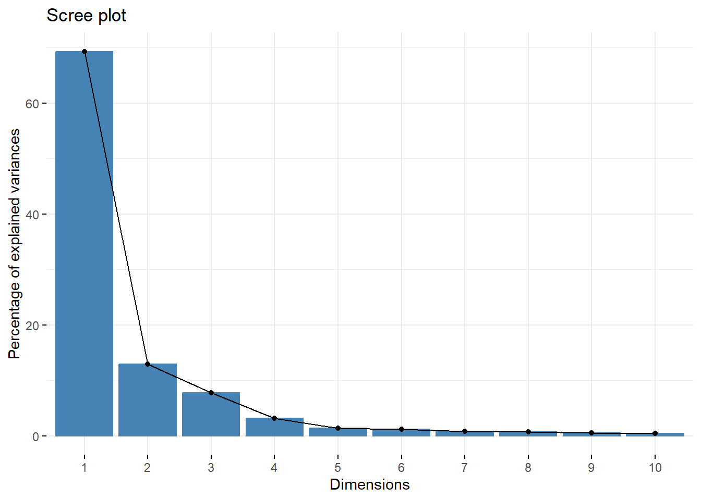
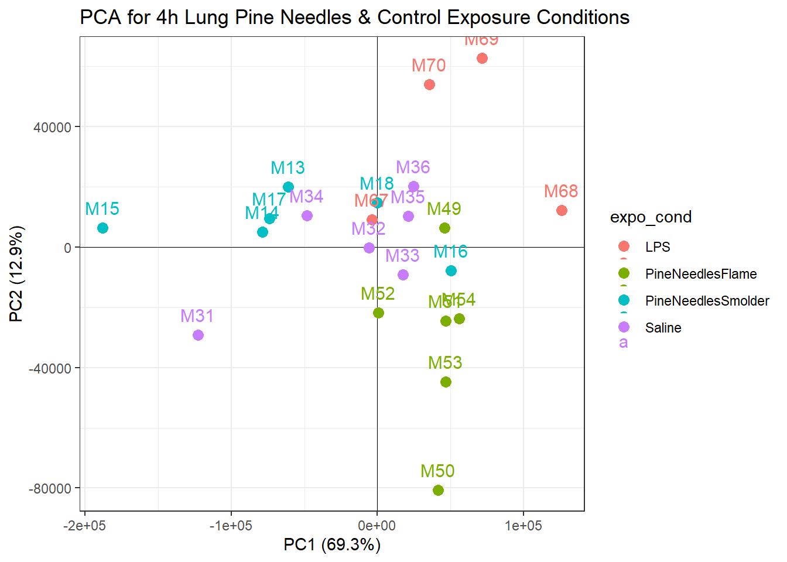
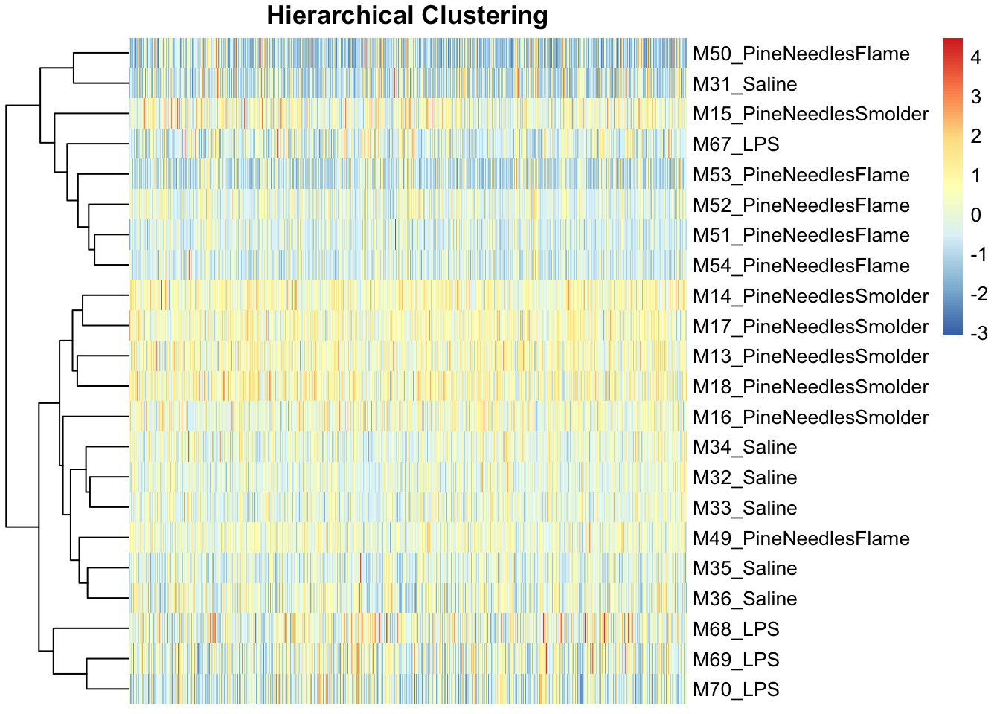
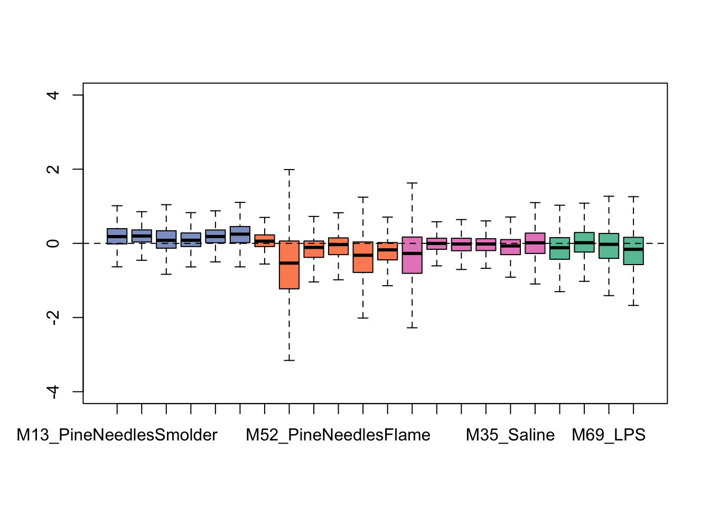
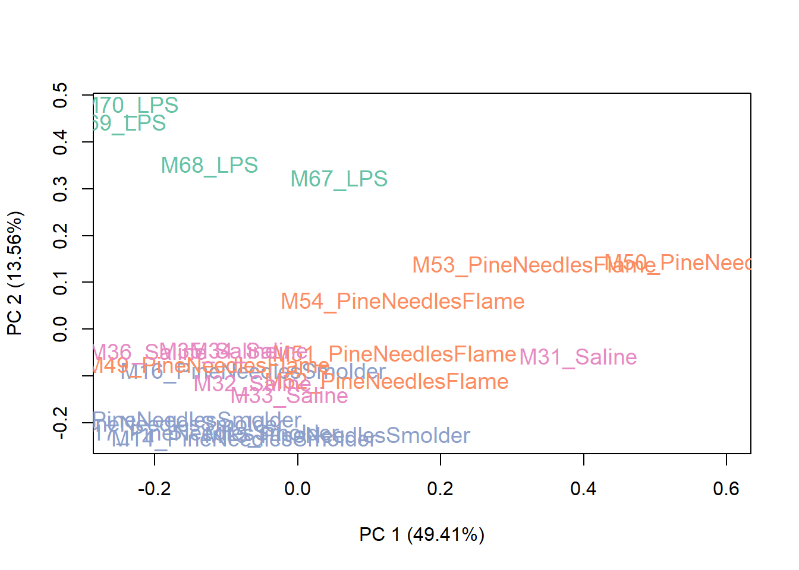
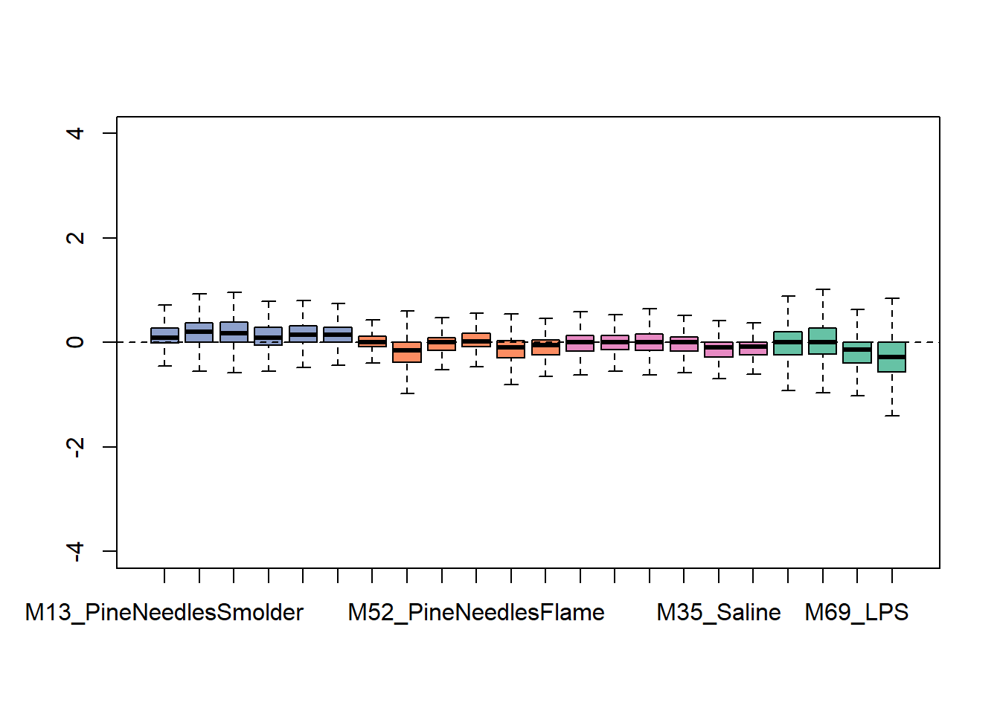
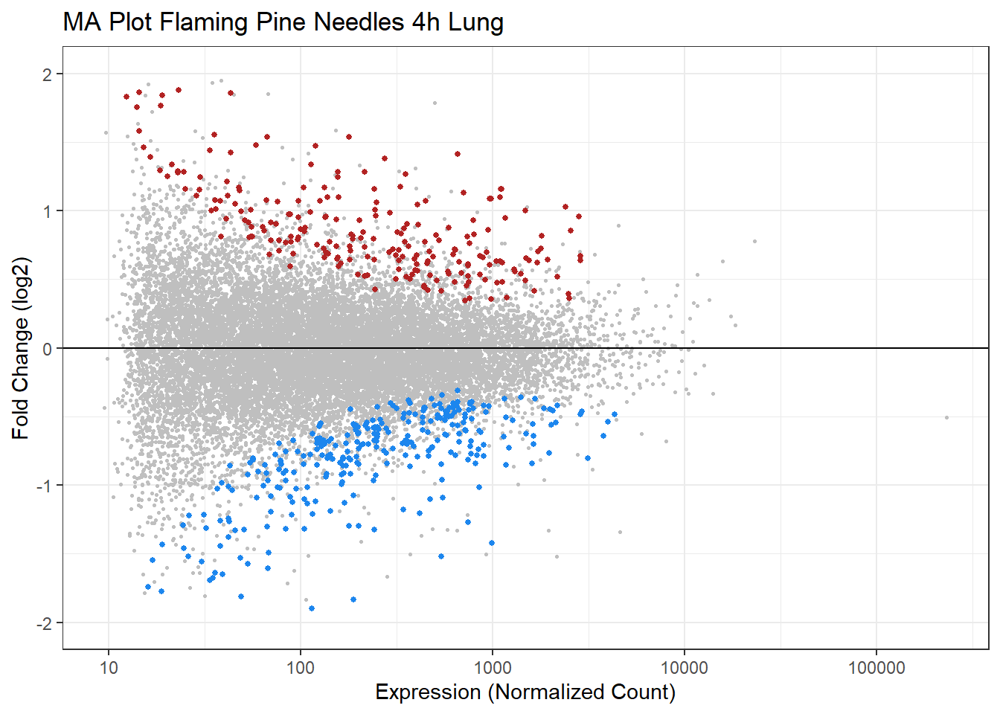

6.2 -Omics and System Biology: Transcriptomic Applications
This training module was developed by Lauren E. Koval, Dr. Kyle Roell, and Dr. Julia E. Rager.
All input files (script, data, and figures) can be downloaded from the UNC-SRP TAME2 GitHub website.
Introduction to Training Module
This training module incorporates the highly relevant example of RNA sequencing to evaluate the impacts of environmental exposures on cellular responses and general human health. RNA sequencing is the most common method that is currently implemented to measure the transcriptome. Results from an RNA sequencing platform are often summarized as count data, representing the number of relative times a gene (or other annotated portion of the genome) was ‘read’ in a given sample. For more details surrounding the methodological underpinnings of RNA sequencing, see the following recent review:
- Stark R, Grzelak M, Hadfield J. RNA sequencing: the teenage years. Nat Rev Genet. 2019 Nov;20(11):631-656. doi: 10.1038/s41576-019-0150-2. Epub 2019 Jul 24. PMID: 31341269.
In this training module, we guide participants through an example RNA sequencing analysis. Here, we analyze RNA sequencing data collected in a toxicology study evaluating the effects of biomass smoke exposure, representing wildfire-relevant exposure conditions. This study has been previously been described in the following publications:
Rager JE, Clark J, Eaves LA, Avula V, Niehoff NM, Kim YH, Jaspers I, Gilmour MI. Mixtures modeling identifies chemical inducers versus repressors of toxicity associated with wildfire smoke. Sci Total Environ. 2021 Jun 25;775:145759. doi: 10.1016/j.scitotenv.2021.145759. Epub 2021 Feb 10. PMID: 33611182.
Kim YH, Warren SH, Krantz QT, King C, Jaskot R, Preston WT, George BJ, Hays MD, Landis MS, Higuchi M, DeMarini DM, Gilmour MI. Mutagenicity and Lung Toxicity of Smoldering vs. Flaming Emissions from Various Biomass Fuels: Implications for Health Effects from Wildland Fires. Environ Health Perspect. 2018 Jan 24;126(1):017011. doi: 10.1289/EHP2200. PMID: 29373863.
Here, we specifically analyze mRNA sequencing profiles collected in mouse lung tissues. These mice were exposed to two different biomass burn scenarios: smoldering pine needles and flaming pine needles, representing certain wildfire smoke exposure scenarios that can occur. The goal of these analyses is to identify which genes demonstrate altered expression in response to these wildfire-relevant exposures, and identify which biological pathways these genes influence to evaluate findings at the systems biology level.
This training module begins by guiding users through the loading, viewing, and formatting of the example transcriptomics datasets and associated metadata. Methods to carry out quality assurance (QA) / quality control (QC) of the transcriptomics data are then described, which are advantageous to ensure high quality data are included in the final statistical analysis. Because these transcriptomic data were derived from bulk lung tissue samples, consisting of mixed cell populations that could have shifted in response to exposures, data are then adjusted for potential sources of heterogeneity using the R package RUVseq.
Statistical models are then implemented to identify genes that were significantly differentially expressed between exposed vs unexposed samples. Models are implemented using algorithms within the commonly implemented R package DESeq2. This package is very convenient, well written, and widely used. The main advantage of this package is that is allows you to perform differential expression analyses and easily obtain various statistics and results with minimal script development on the user-end.
After obtaining results from differential gene expression analyses, we visualize these results using both MA and volcano plots. Finally, we carry out a systems level analysis through pathway enrichment using the R package PIANO to identify which biological pathways were altered in response to these wildfire-relevant exposure scenarios.
Introduction to the Field of “-Omics”
The field of “-omics” has rapidly evolved since its inception in the mid-1990’s, initiated from information obtained through sequencing of the human genome (see the Human Genome Project) as well as the advent of high-content technologies. High-content technologies have allowed the rapid and economical assessment of genome-wide, or ‘omics’-based, endpoints.
Traditional molecular biology techniques typically evaluate the function(s) of individual genes and gene products. Omics-based methods, on the other hand, utilize non-targeted methods to identify many to all genes or gene products in a given environmental/biological sample. These non-targeted approaches allow for the unbiased investigation of potentially unknown or understudied molecular mediators involved in regulating cell health and disease. These molecular profiles have the potential of being altered in response to toxicant exposures and/or during disease initiation/progression.
To further understand the molecular consequences of -omics-based alterations, molecules can be overlaid onto molecular networks to uncover biological pathways and molecular functions that are perturbed at the systems biology level. An overview of these generally methods, starting with high-content technologies and ending of systems biology, is provided in the below figure (created with BioRender.com).

A helpful introduction to the field of -omics in relation to environmental health, as well as methods used to relate -omic-level alterations to systems biology, is provided in the following book chapter:
- Rager JE, Fry RC. Systems Biology and Environmental Exposures. Chpt 4 of ‘Network Biology’ edited by WenJun Zhang. 2013. ISBN: 978-1-62618-941-3. Nova Science Publishers, Inc. Available at: https://www.novapublishers.com/wp-content/uploads/2019/07/978-1-62618-942-3_ch4.pdf.
An additional helpful resource describing computational methods that can be used in systems level analyses is the following book chapter:
- Meisner M, Reif DM. Computational Methods Used in Systems Biology. Chpt 5 of ‘Systems Biology in Toxicology and Environmental Health’ edited by Fry RC. 2015: 85-115. ISBN 9780128015643. Academic Press. Available at: https://www.sciencedirect.com/science/article/pii/B9780128015643000055.
Parallel to human genomics/epigenomics-based research is the newer “-omics” topic of the exposome. The exposome was originally conceptualized as ’all life-course environmental exposures (including lifestyle factors), from the prenatal period onwards (Wild et al. 2005). Since then, this concept has received much attention and additional associated definitions. We like to think of the exposome as including anything in ones environment that may impact the overall health of an individual, excluding the individual’s genome/epigenome. Common elements evaluated as part of the exposome include environmental exposures, such as chemicals and other substances that may impart toxicity. Additional potential stressors include lifestyle factors, socioeconomic factors, infectious agents, therapeutics, and other stressors that may be altered internally (e.g., microbiome). A helpful review of this research field is provided as the following publication:
- Wild CP. The exposome: from concept to utility. Int J Epidemiol. 2012 Feb;41(1):24-32. doi: 10.1093/ije/dyr236. Epub 2012 Jan 31. PMID: 22296988.
Introduction to Transcriptomics
One of the most widely evaluated -omics endpoints is messenger RNA (mRNA) expression (also termed gene expression). As a reminder, mRNA molecules are a major type of RNA produced as the “middle step” in the Central Dogma Theory, which describes how genetic DNA is first transcribed into RNA and then translated into protein. Protein molecules are ultimately the major regulators of cellular processes and overall health. Therefore, any perturbations to this process (including changes to mRNA expression levels) can have tremendous consequences on overall cell function and health. A visualization of these steps in the Central Dogma theory are included below.

mRNA expression can be evaluated in a high-throughout/high-content manner, across the genome, and is referred to as the transcriptome when doing so. Transcriptomics can be measured using a variety of technologies, including high-density nucleic acid arrays (e.g., DNA microarrays or GeneChip arrays), high-throughput PCR technologies, or RNA sequencing technologies. These methods are used to obtain relative measures of genes that are being expressed or transcribed from DNA by measuring the abundance of mRNA molecules. Results of these methods are often termed as providing gene expression signatures or ‘transcriptomes’ of a sample under evaluation.
Training Module’s Environmental Health Questions
This training module was specifically developed to answer the following environmental health questions:
What two types of data are commonly needed in the analysis of transcriptomics data?
When preparing transcriptomics data for statistical analyses, what are three common data filtering steps that are completed during the data QA/QC process?
When identifying potential sample outliers in a typical transcriptomics dataset, what two types of approaches are commonly employed to identify samples with outlying data distributions?
What is an approach that analysts can use when evaluating transcriptomic data from tissues of mixed cellular composition to aid in controlling for sources of sample heterogeneity?
How many genes showed significant differential expression associated with flaming pine needles exposure in the mouse lung, based on a statistical filter of a multiple test corrected p-value (padj) < 0.05?
How many genes showed significant differential expression associated with smoldering pine needles exposure in the mouse lung, based on a statistical filter of a multiple test corrected p-value (padj) < 0.05?
How many genes showed significant differential expression associated with lipopolysaccharide (LPS) exposure in the mouse lung, based on a statistical filter of a multiple test corrected p-value (padj) < 0.05?
What biological pathways are disrupted in association with flaming pine needles exposure in the lung, identified through systems level analyses?
Workspace Preparation and Data Import
Installing required R packages
If you already have these packages installed, you can skip this step, or you can run the below code which checks installation status for you
if (!requireNamespace("tidyverse"))
install.packages("tidyverse");
if (!requireNamespace("BiocManager"))
BiocManager::install("BiocManager");
if (!requireNamespace("DESeq2"))
BiocManager::install("DESeq2");
if (!requireNamespace("edgeR"))
BiocManager::install("edgeR");
if (!requireNamespace("RUVSeq"))
BiocManager::install("RUVSeq");
if (!requireNamespace("janitor"))
install.packages("janitor");
if (!requireNamespace("pheatmap"))
install.packages("pheatmap");
if (!requireNamespace("factoextra"))
install.packages("factoextra");
if (!requireNamespace("RColorBrewer"))
install.packages("RColorBrewer");
if (!requireNamespace("data.table"))
install.packages("data.table");
if (!requireNamespace("EnhancedVolcano"))
BiocManager::install("EnhancedVolcano");
if (!requireNamespace("piano"))
BiocManager::install("piano");Loading the Example Transcriptomic Dataset and Metadata
First, let’s read in the transcriptional signature data, previously summarized as number of sequence reads per gene (also simply referred to as ‘count data’) and its associated metadata file:
Data Viewing
Let’s see how many rows and columns of data are present in the countdata dataframe
## [1] 30146 23Let’s also view the column headers
## [1] "Gene" "Plate1-m13-RNA" "Plate2-m14-RNA" "Plate2-m15-RNA"
## [5] "Plate2-m16-RNA" "Plate2-m17-RNA" "Plate2-m18-RNA" "Plate1-m49-RNA"
## [9] "Plate1-m50-RNA" "Plate1-m51-RNA" "Plate1-m52-RNA" "Plate1-m53-RNA"
## [13] "Plate1-m54-RNA" "Plate1-m31-RNA" "Plate1-m32-RNA" "Plate1-m33-RNA"
## [17] "Plate1-m34-RNA" "Plate1-m35-RNA" "Plate1-m36-RNA" "Plate1-m67-RNA"
## [21] "Plate1-m68-RNA" "Plate1-m69-RNA" "Plate1-m70-RNA"And finally let’s view the top few rows of data
## Gene Plate1-m13-RNA Plate2-m14-RNA Plate2-m15-RNA Plate2-m16-RNA
## 1 Bcat1_29039 0 0 0 0
## 2 Laptm5_29040 0 2 0 1
## 3 Skp2_29041 0 0 0 0
## 4 Nme1_29042 765 1041 1028 856
## 5 Ctsd_29043 25 30 38 24
## 6 Camk1_29044 443 445 433 628
## Plate2-m17-RNA Plate2-m18-RNA Plate1-m49-RNA Plate1-m50-RNA Plate1-m51-RNA
## 1 0 0 0 0 0
## 2 2 1 0 1 2
## 3 0 0 0 0 0
## 4 888 967 816 569 854
## 5 17 19 38 38 34
## 6 497 684 574 71 356
## Plate1-m52-RNA Plate1-m53-RNA Plate1-m54-RNA Plate1-m31-RNA Plate1-m32-RNA
## 1 0 2 0 0 3
## 2 2 7 1 2 1
## 3 0 0 0 0 0
## 4 736 887 930 563 776
## 5 30 24 23 29 21
## 6 403 179 302 172 487
## Plate1-m33-RNA Plate1-m34-RNA Plate1-m35-RNA Plate1-m36-RNA Plate1-m67-RNA
## 1 0 0 0 0 1
## 2 5 0 0 0 1
## 3 0 0 0 0 0
## 4 604 1008 724 632 950
## 5 27 26 18 22 33
## 6 487 429 599 683 147
## Plate1-m68-RNA Plate1-m69-RNA Plate1-m70-RNA
## 1 0 0 0
## 2 3 2 2
## 3 0 0 0
## 4 782 879 860
## 5 19 12 14
## 6 265 335 454Together, this dataframe contains information across 30146 mRNA identifiers, that are labeled according to “Gene name” followed by an underscore and probe number assigned by the platform used in this analysis, BioSpyder TempoSeq Technologies.
A total of 23 columns are included in this dataframe, the first of which represents the gene identifier, followed by gene count data across 22 samples.
Let’s also see what the metadata dataframe looks like
## [1] 22 9Let’s also view the column headers
## [1] "SampleID_BioSpyderCountFile" "PlateBatch"
## [3] "MouseID" "NumericID"
## [5] "Treatment" "ID"
## [7] "Timepoint" "Tissue"
## [9] "Group"And finally let’s view the top few rows of data
## SampleID_BioSpyderCountFile PlateBatch MouseID NumericID Treatment
## 1 Plate1-m13-RNA Plate1 M13 13 PineNeedlesSmolder
## 2 Plate2-m14-RNA Plate2 M14 14 PineNeedlesSmolder
## 3 Plate2-m15-RNA Plate2 M15 15 PineNeedlesSmolder
## 4 Plate2-m16-RNA Plate2 M16 16 PineNeedlesSmolder
## 5 Plate2-m17-RNA Plate2 M17 17 PineNeedlesSmolder
## 6 Plate2-m18-RNA Plate2 M18 18 PineNeedlesSmolder
## ID Timepoint Tissue Group
## 1 M13_PineNeedlesSmolder 4h Lung PineNeedlesSmolder_4h_Lung
## 2 M14_PineNeedlesSmolder 4h Lung PineNeedlesSmolder_4h_Lung
## 3 M15_PineNeedlesSmolder 4h Lung PineNeedlesSmolder_4h_Lung
## 4 M16_PineNeedlesSmolder 4h Lung PineNeedlesSmolder_4h_Lung
## 5 M17_PineNeedlesSmolder 4h Lung PineNeedlesSmolder_4h_Lung
## 6 M18_PineNeedlesSmolder 4h Lung PineNeedlesSmolder_4h_LungTogether, this dataframe contains information across the 22 total samples, that are labeled according to “SampleID_BioSpyderCountFile” header. These identifiers match those used as column headers in the countdata dataframe.
A total of 9 columns are included in this dataframe, including the following:
SampleID_BioSpyderCountFile: The unique sample identifers (total n=22)PlateBatch: The plate number that was used in the generation of these data.- ‘MouseID’: The unique identifier, that starts with “M” followed by a number, for each mouse used in this study
NumericID: The unique numeric identifier for each mouse.Treatment: The type of exposure condition that each mouse was administered. These include smoldering pine needles, flaming pine needles, vehicle control (saline), and positive inflammation control (LPS, or lipopolysaccharide)ID: Another form of identifier that combines the mouse identifier with the exposure conditionTimepoint: The timepoint at which samples were collected (here, all 4h post-exposure)Tissue: The type of tissue that was collected and analyzed (here, all lung tissue)Group: The higher level identifier that groups samples together based on exposure condition, timepoint, and tissue
Checking for Duplicate mRNA IDs
One common QC/preparation step that is helpful when organizing transcriptomics data is to check for potential duplicate mRNA IDs in the countdata.
# Visualize this data quickly by viewing top left corner, to check where ID column is located:
countdata[1:3,1:5]## Gene Plate1-m13-RNA Plate2-m14-RNA Plate2-m15-RNA Plate2-m16-RNA
## 1 Bcat1_29039 0 0 0 0
## 2 Laptm5_29040 0 2 0 1
## 3 Skp2_29041 0 0 0 0# Then check for duplicates within column 1 (where the ID column is located):
Dups <- duplicated(countdata[,1])
summary(Dups)## Mode FALSE
## logical 30146In this case, because all potential duplicate checks turn up “FALSE”, these data do not contain duplicate mRNA identifiers in its current organized format.
Answer to Environmental Health Question 1
With this, we can now answer Environmental Health Question #1: What two types of data are commonly needed in the analysis of transcriptomics data?
Answer: A file containing the raw -omics signatures are needed (in this case, the count data summarized per gene acquired from RNA sequencing technologies), and a file containing the associated metadata describing the actual samples, where they were derived from, what they represent, etc, is needed.
Formatting Data for Downstream Statistics
Most of the statistical analyses included in this training module will be carried out using the DESeq2 pipeline. This package requires that the count data and sample information data be formatted in a certain manner, which will expedite the downstream coding needed to carry out the statistics. Here, we will walk users through these initial formatting steps.
DESeq2 first requires a coldata dataframe, which includes the sample information (i.e., metadata). Let’s create this new dataframe based on the original sampleinfo dataframe:
DESeq2 also requires a countdata dataframe, which we’ve previously created; however, this dataframe requires some minor formatting before it can be used as input for downstream script.
First, the gene identifiers need to be converted into row names:
Then, the column names need to be edited. Let’s remind ourselves what the column names are currently:
## [1] "Plate1-m13-RNA" "Plate2-m14-RNA" "Plate2-m15-RNA" "Plate2-m16-RNA"
## [5] "Plate2-m17-RNA" "Plate2-m18-RNA" "Plate1-m49-RNA" "Plate1-m50-RNA"
## [9] "Plate1-m51-RNA" "Plate1-m52-RNA" "Plate1-m53-RNA" "Plate1-m54-RNA"
## [13] "Plate1-m31-RNA" "Plate1-m32-RNA" "Plate1-m33-RNA" "Plate1-m34-RNA"
## [17] "Plate1-m35-RNA" "Plate1-m36-RNA" "Plate1-m67-RNA" "Plate1-m68-RNA"
## [21] "Plate1-m69-RNA" "Plate1-m70-RNA"These column identifiers need to be converted into more intuitive sample IDs, that also indicate treatment. This information can be found in the coldata dataframe. Specifically, information in the column labeled SampleID_BioSpyderCountFile will be helpful for these purposes.
To replace these original column identifiers with these more helpful sample identifiers, let’s first make sure the order of the countdata columns are in the same order as the coldata column of SampleID_BioSpyderCountFile:
Now, we can rename the column names within the countdata dataframe with these more helpful identifiers, since both dataframes are now arranged in the same order:
colnames(countdata) <- coldata$ID # Rename the countdata column names with the treatment IDs.
colnames(countdata) # Viewing these new column names## [1] "M13_PineNeedlesSmolder" "M14_PineNeedlesSmolder" "M15_PineNeedlesSmolder"
## [4] "M16_PineNeedlesSmolder" "M17_PineNeedlesSmolder" "M18_PineNeedlesSmolder"
## [7] "M49_PineNeedlesFlame" "M50_PineNeedlesFlame" "M51_PineNeedlesFlame"
## [10] "M52_PineNeedlesFlame" "M53_PineNeedlesFlame" "M54_PineNeedlesFlame"
## [13] "M31_Saline" "M32_Saline" "M33_Saline"
## [16] "M34_Saline" "M35_Saline" "M36_Saline"
## [19] "M67_LPS" "M68_LPS" "M69_LPS"
## [22] "M70_LPS"These new column identifiers look much better, and can better inform downstream statistical analysis script. Remember that these identifiers indicate that these are mouse samples (“M”), with unique numbers, followed by an underscore and the exposure condition.
When relabeling dataframes, it’s always important to triple check any of these major edits. For example, here, let’s double check that the same samples appear in the same order between the two working dataframes required for dowstream DESeq2 code:
## [1] TRUE## [1] TRUETranscriptomics Data QA/QC
After preparing your transcriptomic data and sample information dataframes for statistical analyses, it is very important to carry out QA/QC on your organized datasets, prior to including all samples and all genes in the actual statistical model. It is critical to only include high quality data that inform underlying biology of exposure responses/disease etiology, rather than data that may contribute noise to the overall data distributions. Some common QA/QC steps and associated data pre-filters carried out in transcriptomics analyses are detailed below.
Background Filter
It is very common to perform a background filter step when preparing transcriptomic data for statistical analyses. The goal of this step is to remove genes that are very lowly expressed across the majority of samples, and thus are referred to as universally lowly expressed. Signals from these genes can mute the overall signals that may be identified in -omics analyses. The specific threshold that you may want to apply as the background filter to your dataset will depend on the distribution of your dataset and analysis goal(s).
For this example, we apply a background threshold, to remove genes that are lowly expressed across the majority of samples, specifically defined as genes that have expression levels across at least 20% of the samples that are less than (or equal to) the median expression of all genes across all samples. This will result in including only genes that are expressed above background, that have expression levels in at least 20% of samples that are greater than the overall median expression. Script to apply this filter is detailed below:
# First count the total number of samples, and save it as a value in the global environment
nsamp <- ncol(countdata)
# Then, calculate the median expression level across all genes and all samples, and save it as a value
total_median <- median(as.matrix(countdata))
# We need to temporarily add back in the Gene column to the countdata so we can filter for genes that pass the background filter
countdata <- countdata %>% rownames_to_column("Gene")
# Then we can apply a set of filters and organization steps (using the tidyverse) to result in a list of genes that have an expression greater than the total median in at least 20% of the samples
genes_above_background <- countdata %>% # Start from the 'countdata' dataframe
# Melt the data so that we have three columns: gene, exposure condition, and expression counts
pivot_longer(cols=!Gene, names_to = "sampleID", values_to="expression") %>%
# Add a column that indicates whether the expression of a gene for the corresponding exposure condition is above (1) or not above (0) the median of all count data
mutate(above_median=ifelse(expression>total_median,1,0)) %>%
group_by(Gene) %>% # Group the dataframe by the gene
# For each gene, count the number of exposure conditions where the expression was greater than the median of all count data
summarize(total_above_median=sum(above_median)) %>%
# Filter for genes that have expression above the median in at least 20% of the samples
filter(total_above_median>=.2*nsamp) %>%
# Select just the genes that pass the filter
select(Gene)
# Then filter the original 'countdata' dataframe for only the genes above background.
countdata <- left_join(genes_above_background, countdata, by="Gene")Here, the countdata dataframe went from having 30,146 rows of data (representing genes) to 16,664 rows of data (representing genes with expression levels that passed this background filter)
Sample Filtering
Another common QA/QC check is to evaluate whether there are any samples that did not produce adequate RNA material to be measured using the technology employed. Thus, a sample filter can be applied to remove samples that have inadequate data. Here, we demonstrate this filter by checking to see whether there were any samples that resulted in mRNA expression values of zero across all genes. If any sample demonstrates this issue, it should be removed prior to any statistical analysis. Note, there are other filter cut-offs you can use depending on your specific study.
Below is example script that checks for the presence of samples that meet the above criteria:
# Transpose filtered 'countdata', while keeping data in dataframe format, to allow for script that easily sums the total expression levels per sample
countdata_T <- countdata %>%
pivot_longer(cols=!Gene, names_to="sampleID",values_to="expression") %>%
pivot_wider(names_from=Gene, values_from=expression)
# Then add in a column to the transposed countdata dataframe that sums expression across all genes for each exposure condition
countdata_T$rowsum <- rowSums(countdata_T[2:ncol(countdata_T)])
# Remove samples that have no expression. All samples have some expression in this example, so all samples are retained.
countdata_T <- countdata_T %>% filter(rowsum!=0)
# Take the count data filtered for correct samples, remove the 'rowsums' column
countdata_T <- countdata_T %>% select(!rowsum)
# Then, transpose it back to the correct format for analysis
countdata <- countdata_T %>%
pivot_longer(cols=!sampleID, names_to = "Gene",values_to="expression") %>%
pivot_wider(names_from = sampleID, values_from = "expression")Identifying & Removing Sample Outliers
Prior to final statistical analysis, raw transcriptomic data are commonly evaluated for the presence of potential sample outliers. Outliers can result from experimental error, technical error/measurement error, and/or huge sources of variation in biology. For many analyses, it is beneficial to remove such outliers to enhance computational abilities to identify biologically meaningful signals across data. Here, we present two methods to check for the presence of sample outliers:
1. Principal component analysis (PCA) can be used to identify potential outliers in a dataset through visualization of summary-level values illustrating reduced representations of the entire dataset. Note that a more detailed description of PCA is provided in TAME 2.0 Module 5.4 Unsupervised Machine Learning Part 1: K-Means & PCA. Here, PCA is run on the raw count data and further analyzed using scree plots, assessing principal components (PCs), and visualized using biplots displaying the first two principal components as a scatter plot.
2. Hierarchical clustering is another approach that can be used to identify potential outliers. Hierarchical clustering aims to cluster data based on a similarity measure, defined by the function and/or specified by the user. There are several R packages and functions that will run hierarchical clustering, but it is often helpful visually to do this in conjuction with a heatmap. Here, we use the package pheatmap (introduced in TAME 2.0 Module 5.5 Unsupervised Machine Learning Part 2: Additional Clustering Applications) with hierarchical clustering across samples to identify potential outliers.
Let’s start by using PCA to identify potential outliers, while providing a visualization of potential sources of variation across the dataset.
First we need to move the Gene column back to the rownames so our dataframe is numeric and we can run the PCA script
countdata <- countdata %>% column_to_rownames("Gene")
# Let's remind ourselves what these data look like
countdata[1:10,1:5] #viewing first 10 rows and 5 columns## M13_PineNeedlesSmolder M14_PineNeedlesSmolder
## 0610009B22Rik_56046 123 118
## 0610010F05Rik_69119 1378 1511
## 0610010F05Rik_74637 83 55
## 0610010K14Rik_31619 462 580
## 0610010K14Rik_31873 560 814
## 0610010K14Rik_68949 207 182
## 0610012G03Rik_58446 243 299
## 0610030E20Rik_65200 152 105
## 0610040J01Rik_55628 125 106
## 1110004F10Rik_77756 324 377
## M15_PineNeedlesSmolder M16_PineNeedlesSmolder
## 0610009B22Rik_56046 110 167
## 0610010F05Rik_69119 1534 936
## 0610010F05Rik_74637 57 13
## 0610010K14Rik_31619 625 560
## 0610010K14Rik_31873 680 799
## 0610010K14Rik_68949 104 202
## 0610012G03Rik_58446 294 327
## 0610030E20Rik_65200 92 87
## 0610040J01Rik_55628 127 107
## 1110004F10Rik_77756 356 233
## M17_PineNeedlesSmolder
## 0610009B22Rik_56046 147
## 0610010F05Rik_69119 1301
## 0610010F05Rik_74637 54
## 0610010K14Rik_31619 604
## 0610010K14Rik_31873 707
## 0610010K14Rik_68949 166
## 0610012G03Rik_58446 262
## 0610030E20Rik_65200 150
## 0610040J01Rik_55628 93
## 1110004F10Rik_77756 276Then we can calculate principal components using transposed count data
And visualize the percent variation captured by each principal component (PC) with a scree plot
# We can generate a scree plot that shows the eigenvalues of each component, indicating how much of the total variation is captured by each component
fviz_eig(pca, addlabels = TRUE)
This scree plot indicates that nearly all variation is explained in PC1 and PC2, so we are comfortable with viewing these first two PCs when evaluating whether or not potential outliers exist in this dataset.
Visualization of Transcriptomic Data using PCA
Further visualization of how these transcriptomic data appear through PCA can be produced through a scatter plot showing the data reduced values per sample:
# Calculate the percent variation captured by each PC
pca_percent <- round(100*pca$sdev^2/sum(pca$sdev^2),1)
# Make dataframe for PCA plot generation using first two components and the sample name
pca_df <- data.frame(PC1 = pca$x[,1], PC2 = pca$x[,2], Sample=colnames(countdata))
# Organize dataframe so we can color our points by the exposure condition
pca_df <- pca_df %>% separate(Sample, into = c("mouse_num", "expo_cond"), sep="_")
# Plot PC1 and PC2 for each sample and color the point by the exposure condition
ggplot(pca_df, aes(PC1,PC2, color = expo_cond))+
geom_hline(yintercept = 0, size=0.3)+
geom_vline(xintercept = 0, size=0.3)+
geom_point(size=3) +
geom_text(aes(label=mouse_num), vjust =-1, size=4)+
labs(x=paste0("PC1 (",pca_percent[1],"%)"), y=paste0("PC2 (",pca_percent[2],"%)"))+
ggtitle("PCA for 4h Lung Pine Needles & Control Exposure Conditions")
With this plot, we can see that samples do not demonstrate obvious groupings, where certain samples group far apart from others. Therefore, our PCA analysis indicates that there are unlikely any sample outliers in this dataset.
Now lets implement hierarchical clustering to identify potential outliers
First we need to create a dataframe of our transposed countdata such that samples are rows and genes are columns to input into the clustering algorithm.
countdata_for_clustering <- t(countdata)
countdata_for_clustering[1:5,1:10] # Viewing what this transposed dataframe looks like## 0610009B22Rik_56046 0610010F05Rik_69119
## M13_PineNeedlesSmolder 123 1378
## M14_PineNeedlesSmolder 118 1511
## M15_PineNeedlesSmolder 110 1534
## M16_PineNeedlesSmolder 167 936
## M17_PineNeedlesSmolder 147 1301
## 0610010F05Rik_74637 0610010K14Rik_31619
## M13_PineNeedlesSmolder 83 462
## M14_PineNeedlesSmolder 55 580
## M15_PineNeedlesSmolder 57 625
## M16_PineNeedlesSmolder 13 560
## M17_PineNeedlesSmolder 54 604
## 0610010K14Rik_31873 0610010K14Rik_68949
## M13_PineNeedlesSmolder 560 207
## M14_PineNeedlesSmolder 814 182
## M15_PineNeedlesSmolder 680 104
## M16_PineNeedlesSmolder 799 202
## M17_PineNeedlesSmolder 707 166
## 0610012G03Rik_58446 0610030E20Rik_65200
## M13_PineNeedlesSmolder 243 152
## M14_PineNeedlesSmolder 299 105
## M15_PineNeedlesSmolder 294 92
## M16_PineNeedlesSmolder 327 87
## M17_PineNeedlesSmolder 262 150
## 0610040J01Rik_55628 1110004F10Rik_77756
## M13_PineNeedlesSmolder 125 324
## M14_PineNeedlesSmolder 106 377
## M15_PineNeedlesSmolder 127 356
## M16_PineNeedlesSmolder 107 233
## M17_PineNeedlesSmolder 93 276Next we can run hierarchical clustering in conjunction with the generation of a heatmap. Note that we scale these data for improved visualization.
pheatmap(scale(countdata_for_clustering), main="Hierarchical Clustering",
cluster_rows=TRUE, cluster_cols = FALSE,
fontsize_col = 7, treeheight_row = 60, show_colnames = FALSE)
Like the PCA findings, heirarchical clustering demonstrated an overall lack of potential sample outliers because there were no obvious sample(s) that grouped separately from the rest along the clustering dendograms.
Therefore, neither approach points to outliers that should be removed in this analysis.
Answer to Environmental Health Question 2
With this, we can now answer Environmental Health Question #2: When preparing transcriptomics data for statistical analyses, what are three common data filtering steps that are completed during the data QA/QC process?
Answer: (1) Background filter to remove genes that are universally lowly expressed; (2) Sample filter to remove samples that may be not have any detectable mRNA; (3) Sample outlier filter to remove samples with underlying data distributions outside of the overall, collective dataset.*
Answer to Environmental Health Question 3
With this, we can now also answer Environmental Health Question #3: When identifying potential sample outliers in a typical transcriptomics dataset, what two types of approaches are commonly employed to identify samples with outlying data distributions?
Answer: Principal component analysis (PCA) and hierarchical clustering.
Controlling for Sources of Sample Heterogeneity
Because these transcriptomic data were generated from mouse lung tissues, there is potential for these samples to show heterogeneity based on underlying shifts in cell populations (e.g., neutrophil influx) or other aspects of sample heterogeneity (e.g., batch effects from plating, among other sources of heterogeneity that we may want to control for). For these kinds of complex samples, there are data processing methods that can be leveraged to minimize the influence of these sources of heterogeneity. Example methods include Remove Unwanted Variable (RUV), which is discussed here, as well as others (e.g., Surrogate Variable Analysis (SVA)).
Here, we leverage the package called RUVseq to employ RUV on this sequencing dataset. Script was developed based off Bioconductor website, vignette, and original publication.
Steps in carrying out RUV using RUVseq on this example dataset:
# First we store the treatment IDs and exposure conditions as a separate vector
ID <- coldata$ID
# And differentiate our treatments and control conditions, first by grabbing the groups associated with each sample
groups <- as.factor(coldata$Group)
# Let's view all the groups
groups## [1] PineNeedlesSmolder_4h_Lung PineNeedlesSmolder_4h_Lung
## [3] PineNeedlesSmolder_4h_Lung PineNeedlesSmolder_4h_Lung
## [5] PineNeedlesSmolder_4h_Lung PineNeedlesSmolder_4h_Lung
## [7] PineNeedlesFlame_4h_Lung PineNeedlesFlame_4h_Lung
## [9] PineNeedlesFlame_4h_Lung PineNeedlesFlame_4h_Lung
## [11] PineNeedlesFlame_4h_Lung PineNeedlesFlame_4h_Lung
## [13] Saline_4h_Lung Saline_4h_Lung
## [15] Saline_4h_Lung Saline_4h_Lung
## [17] Saline_4h_Lung Saline_4h_Lung
## [19] LPS_4h_Lung LPS_4h_Lung
## [21] LPS_4h_Lung LPS_4h_Lung
## 4 Levels: LPS_4h_Lung PineNeedlesFlame_4h_Lung ... Saline_4h_Lung# then setting a control label
ctrl <- "Saline_4h_Lung"
# and extracting a vector of just our treatment groups
trt_groups <- setdiff(groups,ctrl)
# let's view this vector
trt_groups## [1] "PineNeedlesSmolder_4h_Lung" "PineNeedlesFlame_4h_Lung"
## [3] "LPS_4h_Lung"RUVseq contains its own set of plotting and normalization functions, though requires input of what’s called an object of S4 class SeqExpressionSet. Let’s go ahead and make this object, using the RUVseq function newSeqExpressionSet():
exprSet <- newSeqExpressionSet(as.matrix(countdata),phenoData = data.frame(groups,row.names=colnames(countdata)))And then use this object to generate some exploratory plots using built-in tools within RUVseq. First starting with some bar charts summarizing overall data distributions per sample:

We can see from this plot that some of the samples show distributions that may vary from the overall - for instance, one of the flaming pine needles-exposed samples (in orange) is far lower than the rest.
Then viewing a PCA plot of these samples:

This PCA plot shows pretty good data distributions, with samples mainly showing groupings based upon exposure condition (e.g., LPS), which is to be expected. With this, we can conclude that there may be some sources of unwanted variation, but not a huge amount. Let’s see what the data look like after running RUV.
Now to actually run the RUVseq algorithm, to control for potential sources of sample heterogeneity, we need to first construct a matrix specifying the replicates (samples of the same exposure condition):
# Construct a matrix specifying the replicates (samples of the same exposure condition) for running RUV
differences <- makeGroups(groups)
# Viewing this new matrix
head(differences)## [,1] [,2] [,3] [,4] [,5] [,6]
## [1,] 19 20 21 22 -1 -1
## [2,] 7 8 9 10 11 12
## [3,] 1 2 3 4 5 6
## [4,] 13 14 15 16 17 18This matrix groups the samples by exposure condition. Here, each of the four rows represents one of the four exposure conditions, and each of the six columns represents a possible sample. Since the LPS exposure condition only had four samples, instead of six like the rest of the exposure conditions, a value of -1 is automatically used as a place holder to fill out the matrix. The samples in the matrix are identified by the index of the sample in the previously defined ‘groups’ factor that was used to generate the matrix. For example, the PineNeedlesSmolder_4h_Lung samples are the the first six samples contained in the ‘groups’ factor, so in the matrix, samples of this exposure condition are identified as ‘1’,‘2’,‘3’,‘4’,‘5’, and ‘6’.
Let’s now implement the RUVseq algorithm and, for this example, capture one factor (k=1) of unwanted variation. Note that the k parameter can be modified to capture additional factors, if necessary.
# Now capture 1 factor (k=1) of unwanted variation
ruv_set <- RUVs(exprSet, rownames(countdata), k=1, differences) This results in a list of objects within ruv_set, which include the following important pieces of information:
- Estimated factors of unwanted variation are provided in the phenoData object, as viewed using the following:
## groups W_1
## M13_PineNeedlesSmolder PineNeedlesSmolder_4h_Lung 1.3777900
## M14_PineNeedlesSmolder PineNeedlesSmolder_4h_Lung 1.2392662
## M15_PineNeedlesSmolder PineNeedlesSmolder_4h_Lung 1.0687702
## M16_PineNeedlesSmolder PineNeedlesSmolder_4h_Lung 1.2448747
## M17_PineNeedlesSmolder PineNeedlesSmolder_4h_Lung 1.3156003
## M18_PineNeedlesSmolder PineNeedlesSmolder_4h_Lung 1.4136600
## M49_PineNeedlesFlame PineNeedlesFlame_4h_Lung 1.3343115
## M50_PineNeedlesFlame PineNeedlesFlame_4h_Lung 0.4446084
## M51_PineNeedlesFlame PineNeedlesFlame_4h_Lung 1.0172990
## M52_PineNeedlesFlame PineNeedlesFlame_4h_Lung 1.0332373
## M53_PineNeedlesFlame PineNeedlesFlame_4h_Lung 0.7746752
## M54_PineNeedlesFlame PineNeedlesFlame_4h_Lung 1.0011086
## M31_Saline Saline_4h_Lung 0.6582117
## M32_Saline Saline_4h_Lung 1.2518829
## M33_Saline Saline_4h_Lung 1.1892456
## M34_Saline Saline_4h_Lung 1.2607852
## M35_Saline Saline_4h_Lung 1.3141520
## M36_Saline Saline_4h_Lung 1.4335200
## M67_LPS LPS_4h_Lung 1.0341947
## M68_LPS LPS_4h_Lung 1.2823240
## M69_LPS LPS_4h_Lung 1.4460347
## M70_LPS LPS_4h_Lung 1.4376930- Normalized counts obtained by regressing the original counts on the unwanted factors (normalizedCounts object within
ruv_set). Note that the normalized counts should only used for exploratory purposes and not subsequent differential expression analyses. For additional information on this topic, please refer official RUVSeq documentation. The normalized counts can be viewed using the following:
# Viewing the head of the normalized count data, accounting for unwanted variation
head(normCounts(ruv_set))## M13_PineNeedlesSmolder M14_PineNeedlesSmolder
## 0610009B22Rik_56046 4 5
## 0610010F05Rik_69119 2552 2630
## 0610010F05Rik_74637 17 13
## 0610010K14Rik_31619 1602 1774
## 0610010K14Rik_31873 711 1009
## 0610010K14Rik_68949 23 25
## M15_PineNeedlesSmolder M16_PineNeedlesSmolder
## 0610009B22Rik_56046 8 8
## 0610010F05Rik_69119 2474 1634
## 0610010F05Rik_74637 17 3
## 0610010K14Rik_31619 1639 1722
## 0610010K14Rik_31873 819 992
## 0610010K14Rik_68949 19 28
## M17_PineNeedlesSmolder M18_PineNeedlesSmolder
## 0610009B22Rik_56046 6 4
## 0610010F05Rik_69119 2343 2352
## 0610010F05Rik_74637 12 7
## 0610010K14Rik_31619 1979 1726
## 0610010K14Rik_31873 889 888
## 0610010K14Rik_68949 20 30
## M49_PineNeedlesFlame M50_PineNeedlesFlame
## 0610009B22Rik_56046 4 5
## 0610010F05Rik_69119 1767 1563
## 0610010F05Rik_74637 12 6
## 0610010K14Rik_31619 1480 1134
## 0610010K14Rik_31873 586 599
## 0610010K14Rik_68949 23 27
## M51_PineNeedlesFlame M52_PineNeedlesFlame
## 0610009B22Rik_56046 4 4
## 0610010F05Rik_69119 1918 1711
## 0610010F05Rik_74637 4 9
## 0610010K14Rik_31619 1390 1763
## 0610010K14Rik_31873 683 797
## 0610010K14Rik_68949 26 27
## M53_PineNeedlesFlame M54_PineNeedlesFlame M31_Saline
## 0610009B22Rik_56046 5 5 3
## 0610010F05Rik_69119 1751 1582 1891
## 0610010F05Rik_74637 6 3 10
## 0610010K14Rik_31619 1370 1419 1340
## 0610010K14Rik_31873 593 647 561
## 0610010K14Rik_68949 20 24 19
## M32_Saline M33_Saline M34_Saline M35_Saline M36_Saline
## 0610009B22Rik_56046 2 4 3 4 4
## 0610010F05Rik_69119 2507 2518 2524 1831 1878
## 0610010F05Rik_74637 7 7 5 7 8
## 0610010K14Rik_31619 1563 1632 1438 1280 967
## 0610010K14Rik_31873 685 815 703 646 526
## 0610010K14Rik_68949 16 21 19 22 20
## M67_LPS M68_LPS M69_LPS M70_LPS
## 0610009B22Rik_56046 3 2 4 5
## 0610010F05Rik_69119 1906 1597 1461 1201
## 0610010F05Rik_74637 6 6 7 5
## 0610010K14Rik_31619 964 1012 776 638
## 0610010K14Rik_31873 622 702 522 496
## 0610010K14Rik_68949 21 21 18 15Let’s again generate an exploratory plot using this updated dataset, focusing on the bar chart view since that was the most informative pre-RUV. Here are the updated bar charts summarizing overall data distributions per sample:

This plot shows overall tighter data that are more similarly distributed across samples. Therefore, it is looking like this RUV addition improved the overall distribution of this dataset. It is important not to over-correct/over-smooth your datasets, so implement these types of pre-processing steps with caution. One strategy that we commonly employ to gage whether data smoothing is needed/applied correctly is to run the statistical models with and without correction of potential sources of heterogeneity, and critically evaluate similarities vs differences produced in the results.
Answer to Environmental Health Question 4
With this, we can now answer Environmental Health Question #4: What is an approach that analysts can use when evaluating transcriptomic data from tissues of mixed cellular composition to aid in controlling for sources of sample heterogeneity?
Answer: Remove unwanted variation (RUV), among other approaches, including surrogate variable analysis (SVA).
Identifying Genes that are Significantly Differentially Expressed by Environmental Exposure Conditions (e.g., Biomass Smoke Exposure)
At this point, we have completed several data pre-processing, QA/QC, and additional steps to prepare our example transcriptomics data for statistical analysis. And finally, we are ready to run the overall statistical model to identify genes that are altered in expression in association with different biomass burn conditions.
Here we leverage the DESeq2 package to carry out these statistical comparisons. This package is now the most commonly implemented analysis pipeline used for transcriptomic data, including sequencing data as well as transcriptomic data produced via other technologies (e.g., Nanostring, Fluidigm, and other gene expression technologies). This package is extremely well-documented and we encourage trainees to leverage these resources in parallel with the current training module when carrying out their own transcriptomics analyses in R:
- Bioconductor website
- Vignette
- Manual
- Primary citation: Love MI, Huber W, Anders S. Moderated estimation of fold change and dispersion for RNA-seq data with DESeq2. Genome Biol. 2014;15(12):550. doi: 10.1186/s13059-014-0550-8. PMID: 25516281
In brief, the basic calculations employed within the DESeq2 underlying algorithms include the following:
1. Estimate size factors. In the first step, size factors are estimated to help account for potential differences in the sequencing depth across samples. It is similar to a normalization parameter in the model.
2. Normalize count data. DESeq2 employs different normalization algorithms depending on the parameters selected / stage of analysis. The most commonly employed method is called the median of ratios, which takes into account sequencing depth and RNA composition, as described here. Specifically, these normalized values are calculated as counts divided by sample-specific size factors determined by median ratio of gene counts relative to geometric mean per gene. DESeq2 then transforms these data using variance stabilization within the final statistical model. Because of these two steps, we prefer to export both the median of ratios normalized data as well as the variance stabilization transformed data, to save in our records and use when generating plots of expression levels for specific genes we are interested in. These steps are detailed below.
3. Estimate dispersion. The dispersion estimate takes into account the relationship between the variance of an observed count and its mean value. It is similar to a variance parameter. In DESeq2, dispersion is estimated using a maximum likelihood and empirical bayes approach.
4. Fit negative binomial generalized linear model (GLM). Finally, a negative binomial model is fit for each gene using the design formula that will be described within the proceeding code. The Wald test is performed to test if log fold changes in expression (typically calculated as log(average exposed / average unexposed)) significantly differ from zero. Statistical p-values are reported from this test and also adjusted for multiple testing using the Benjamini and Hochberg procedure.
Note that these calculations, among others, are embedded within the DESeq2 functions, so we do not need to code for them ourselves. Instead, we just need to make sure that we set-up the DESeq2 functions correctly, such that these calculations are carried out appropriately in our final transcriptomics analyses.
Setting up the DESeq2 experiment
Here we provide example script that is used to identify which genes are significantly differentially expressed in association with the example biomass smoke exposures, smoldering pine needles and flaming pine needles, as well as a positive inflammation control, LPS.
First, we need to set-up the DESeq2 experiment:
# Set up our experiment using our RUV adjusted count and phenotype data.
# Our design indicates that our count data is dependent on the exposure condition (groups variable) and our factor of unwanted variation, and we have specified that there not be an intercept term through the use of '~0'
dds <- DESeqDataSetFromMatrix(countData = counts(ruv_set), # Grabbing count data from the 'ruv_set' object
colData = pData(ruv_set), # Grabbing the phenotype data and corresponding factor of unwanted variation from the 'ruv_set' object
design = ~0+groups+W_1) # Setting up the statistical formula (see below)For the formula design, we use a ‘~0’ at the front to not include an intercept term, and then also account for the exposure condition (groups) and the previously calculated factors of unwanted variation (W_1) of the samples. Formula design is an important step and should be carefully considered for each individual analysis. Other resources, including official DESeq2 documentation, are available for consultation regarding formula design, as the specifics of formula design are beyond the scope of this training module.
It is worth noting that, by default, DESeq2 will use the last variable in the design formula (W_1) in this case, as the default variable to be output from the “results” function. Additionally, if the variable is categorical, it will display results comparing the reference level to the last level of that variable. To get results for other variables or to see other comparisons within a categorical variable, we can use the contrast parameter, which will be demonstrated below.
Estimating size factors
# Estimate size factors from the dds object that was just created as the experiment above
dds <- estimateSizeFactors(dds)
sizeFactors(dds) # viewing the size factors## M13_PineNeedlesSmolder M14_PineNeedlesSmolder M15_PineNeedlesSmolder
## 1.2668895 1.3040762 1.1782071
## M16_PineNeedlesSmolder M17_PineNeedlesSmolder M18_PineNeedlesSmolder
## 1.1723749 1.2904950 1.3405500
## M49_PineNeedlesFlame M50_PineNeedlesFlame M51_PineNeedlesFlame
## 1.1313237 0.6313099 0.9328970
## M52_PineNeedlesFlame M53_PineNeedlesFlame M54_PineNeedlesFlame
## 1.0050414 0.7649632 0.8747854
## M31_Saline M32_Saline M33_Saline
## 0.8050127 1.0480725 1.0389623
## M34_Saline M35_Saline M36_Saline
## 1.0282261 0.9519266 1.0409103
## M67_LPS M68_LPS M69_LPS
## 0.9308588 1.1002076 0.9793051
## M70_LPS
## 0.8575718Calculating and exporting normalized counts
Here, we extract normalized counts and variance stabilized counts.
# Extract normalized count data
normcounts <- as.data.frame(counts(dds, normalized=TRUE))
# Transforming normalized counts through variance stabilization
vsd <- varianceStabilizingTransformation(dds, blind=FALSE)
vsd_matrix <- as.matrix(assay(vsd))We could also export them using code such as:
Running the final DESeq2 experiment
Here, we are finally ready to run the actual statistical comparisons (exposed vs control samples) to calculate fold changes and p-values that describe the degree to which each gene may or may not be altered at the expression level in association with treatment.
For this example, we would like to run three different comparisons:
(1) Smoldering Pine Needles vs. Control
(2) Flaming Pine Needles vs. Control
(3) LPS vs. Control
which we can easily code for using a loop function, as detailed below.
Note that we have commented out the line of code for writing out the CSV because we do not need it for the rest of the module, but this could be used if you need to write out and view results in an external application such as Excel for supplementary materials.
# Run experiment
dds_run <- DESeq(dds, betaPrior=FALSE)
# Loop through and extract and export results for all contrasts (treatments vs. control)
for (trt in trt_groups){ # Iterate for each of the treatments listed in 'trt_groups'
cat(trt) # Print which treatment group we are on in the loop
res <- results(dds_run, pAdjustMethod = "BH", contrast = c("groups",trt,ctrl)) # Extract the results of the DESeq2 analysis specifically for the comparison of the treatment group for the current iteration of the loop with the control group
summary(res) # Print out a high-level summary of the results
ordered <- as.data.frame(res[order(res$padj),]) # Make a dataframe of the results and order them by adjusted p-value from lowest to highest
top10 <- head(ordered, n=10) # Make dataframe of the first ten rows of the ordered results
cat("\nThe 10 most significantly differentially expressed genes by adjusted p-value:\n\n")
print(top10) # View the first ten rows of the ordered results
pfilt.05 <- nrow(ordered %>% filter(padj<0.05)) # Get the number of genes that are significantly differentially expressed where padj < 0.05
cat("\nThe number of genes showing significant differential expression where padj < 0.05 is ", pfilt.05)
pfilt.10 <- nrow(ordered %>% filter(padj<0.1)) # Get the number of genes that are significantly differentially expressed where padj < 0.10
cat("\nThe number of genes showing significant differential expression where padj < 0.10 is ", pfilt.10,"\n\n")
# write.csv(ordered, paste0("Module6_2_Output_StatisticalResults_",trt ,".csv")) ## Export the full dataframe of ordered results as a csv
}## PineNeedlesSmolder_4h_Lung
## out of 16664 with nonzero total read count
## adjusted p-value < 0.1
## LFC > 0 (up) : 457, 2.7%
## LFC < 0 (down) : 697, 4.2%
## outliers [1] : 0, 0%
## low counts [2] : 1293, 7.8%
## (mean count < 21)
## [1] see 'cooksCutoff' argument of ?results
## [2] see 'independentFiltering' argument of ?results
##
##
## The 10 most significantly differentially expressed genes by adjusted p-value:
##
## baseMean log2FoldChange lfcSE stat pvalue
## Hbs1l_72436 367.64772 -1.1465230 0.13614949 -8.421060 3.730933e-17
## Cetn3_30290 2350.31984 -0.7197604 0.09379276 -7.673944 1.667868e-14
## Grasp_56900 277.43936 0.9759274 0.14177298 6.883734 5.830390e-12
## Pcsk7_57804 180.24040 0.8261941 0.13529825 6.106465 1.018617e-09
## Plscr4_55764 178.95216 1.3193654 0.21751536 6.065620 1.314459e-09
## Socs3_79479 183.28293 1.2535533 0.20740514 6.043983 1.503550e-09
## Kat2b_64780 444.97603 -0.7197105 0.12034633 -5.980327 2.226896e-09
## Ptp4a2_62762 1840.75247 -0.7802857 0.13076704 -5.966990 2.416698e-09
## Rmi1_56327 377.57936 -0.8548903 0.14288443 -5.983089 2.189449e-09
## Abcd2_62271 57.46455 -1.2504459 0.21464501 -5.825646 5.689193e-09
## padj
## Hbs1l_72436 5.734817e-13
## Cetn3_30290 1.281840e-10
## Grasp_56900 2.987297e-08
## Pcsk7_57804 3.851843e-06
## Plscr4_55764 3.851843e-06
## Socs3_79479 3.851843e-06
## Kat2b_64780 4.127451e-06
## Ptp4a2_62762 4.127451e-06
## Rmi1_56327 4.127451e-06
## Abcd2_62271 8.744859e-06
##
## The number of genes showing significant differential expression where padj < 0.05 is 679
## The number of genes showing significant differential expression where padj < 0.10 is 1154
##
## PineNeedlesFlame_4h_Lung
## out of 16664 with nonzero total read count
## adjusted p-value < 0.1
## LFC > 0 (up) : 411, 2.5%
## LFC < 0 (down) : 575, 3.5%
## outliers [1] : 0, 0%
## low counts [2] : 0, 0%
## (mean count < 10)
## [1] see 'cooksCutoff' argument of ?results
## [2] see 'independentFiltering' argument of ?results
##
##
## The 10 most significantly differentially expressed genes by adjusted p-value:
##
## baseMean log2FoldChange lfcSE stat pvalue
## Tmem109_70229 351.49267 1.2681226 0.1637785 7.742913 9.716419e-15
## Rhof_64396 58.57258 1.4767798 0.2210640 6.680328 2.384081e-11
## Plscr4_55764 178.95216 1.5349460 0.2393976 6.411701 1.439049e-10
## Pip4k2a_67992 796.64597 0.8262520 0.1299839 6.356571 2.063073e-10
## Zranb2_68671 739.91379 0.8131628 0.1330277 6.112735 9.793822e-10
## Cul1_31957 896.52286 -0.7061150 0.1203618 -5.866602 4.448172e-09
## Ppfibp1_75630 655.07197 1.4148222 0.2481843 5.700692 1.193223e-08
## Mbnl1_30670 851.18586 -1.0159639 0.1811247 -5.609197 2.032670e-08
## Atp5k_68198 1096.49479 1.1003470 0.1983469 5.547588 2.896380e-08
## Gclm_29258 138.54250 1.0993904 0.1985396 5.537387 3.070173e-08
## padj
## Tmem109_70229 1.619144e-10
## Rhof_64396 1.986416e-07
## Plscr4_55764 7.993439e-07
## Pip4k2a_67992 8.594761e-07
## Zranb2_68671 3.264085e-06
## Cul1_31957 1.235406e-05
## Ppfibp1_75630 2.840553e-05
## Mbnl1_30670 4.234052e-05
## Atp5k_68198 5.116136e-05
## Gclm_29258 5.116136e-05
##
## The number of genes showing significant differential expression where padj < 0.05 is 515
## The number of genes showing significant differential expression where padj < 0.10 is 986
##
## LPS_4h_Lung
## out of 16664 with nonzero total read count
## adjusted p-value < 0.1
## LFC > 0 (up) : 2960, 18%
## LFC < 0 (down) : 2947, 18%
## outliers [1] : 0, 0%
## low counts [2] : 0, 0%
## (mean count < 10)
## [1] see 'cooksCutoff' argument of ?results
## [2] see 'independentFiltering' argument of ?results
##
##
## The 10 most significantly differentially expressed genes by adjusted p-value:
##
## baseMean log2FoldChange lfcSE stat pvalue
## Usp18_32270 1319.2259 3.829526 0.1459140 26.24508 8.133515e-152
## Usp18_67659 414.5959 3.739864 0.1679851 22.26307 8.428171e-110
## Ifit1_29859 862.3286 5.000365 0.2259553 22.12989 1.629877e-108
## Oasl2_67419 1437.6182 3.710164 0.1904583 19.48019 1.616902e-84
## Gbp5_77887 600.7219 5.272287 0.2769982 19.03365 8.977555e-81
## Oasl2_67043 292.4482 3.898484 0.2096435 18.59578 3.476310e-77
## Rnf213_57840 1052.0454 3.168052 0.1731212 18.29962 8.332621e-75
## Cmpk2_70664 429.4232 4.592488 0.2518916 18.23200 2.875888e-74
## Cmpk2_29189 695.1997 4.264136 0.2386279 17.86939 2.042134e-71
## Eif2ak2_30238 1585.6071 2.671974 0.1495526 17.86645 2.152596e-71
## padj
## Usp18_32270 1.355369e-147
## Usp18_67659 7.022352e-106
## Ifit1_29859 9.053424e-105
## Oasl2_67419 6.736013e-81
## Gbp5_77887 2.992039e-77
## Oasl2_67043 9.654872e-74
## Rnf213_57840 1.983640e-71
## Cmpk2_70664 5.990475e-71
## Cmpk2_29189 3.587085e-68
## Eif2ak2_30238 3.587085e-68
##
## The number of genes showing significant differential expression where padj < 0.05 is 4813
## The number of genes showing significant differential expression where padj < 0.10 is 5907Answer to Environmental Health Question 5
With this, we can now answer Environmental Health Question #5: How many genes showed significant differential expression associated with flaming pine needles exposure in the mouse lung, based on a statistical filter of a multiple test corrected p-value (padj) < 0.05?
Answer: 515 genes
Answer to Environmental Health Question 6
With this, we can also now answer Environmental Health Question #6: How many genes showed significant differential expression associated with smoldering pine needles exposure in the mouse lung, based on a statistical filter of a multiple test corrected p-value (padj) < 0.05?
Answer: 679 genes
Answer to Environmental Health Question 7
And, we can answer Environmental Health Question #7: How many genes showed significant differential expression associated with lipopolysaccharide (LPS) exposure in the mouse lung, based on a statistical filter of a multiple test corrected p-value (padj) < 0.05?
Answer: 4,813 genes
Together, we find that exposure to both flaming and smoldering of pine needles caused substantial disruptions in gene expression profiles. LPS serves as a positive control for inflammation and produced the greatest transcriptomic response.
Visualizing Statistical Results using MA Plots
MA plots represent a common method of visualization that illustrates differences between measurements taken in two samples, by transforming the data onto M (log ratio) and A (mean average) scales, then plotting these values.
Here, we leverage MA plots to show how log fold changes relate to expression levels. In these plots, the log fold change is plotted on the y-axis and expression values are plotted along the x-axis, and dots are colored according to statistical significance (using padj<0.05 as the statistical filter). Here we will generate an MA plot for Flaming Pine Needles.
res <- results(dds_run, pAdjustMethod = "BH", contrast = c("groups","PineNeedlesFlame_4h_Lung",ctrl)) # Re-extract the DESeq2 results for the flaming pine needles
MA <- data.frame(res) # Make a preliminary dataframe of the flaming pine needle results
MA_ns <- MA[ which(MA$padj>=0.05),] # Non-significant genes to plot
MA_up <- MA[ which(MA$padj<0.05 & MA$log2FoldChange > 0),] # Significant up-regulated genes to plot
MA_down <- MA[ which(MA$padj<0.05 & MA$log2FoldChange < 0),] #Significant down-regulated genes to plot
ggplot(MA_ns, aes(x = baseMean, y = log2FoldChange)) + # Plot data with counts on x-axis and log2 fold change on y-axis
geom_point(color="gray75", size = .5) + # Set point size and color
geom_point(data = MA_up, color="firebrick", size=1, show.legend = TRUE) + # Plot the up-regulated significant genes
geom_point(data = MA_down, color="dodgerblue2", size=1, show.legend = TRUE) + # Plot down-regulated significant genes
theme_bw() + # Change theme of plot from gray to black and white
# We want to log10 transform x-axis for better visualizations
scale_x_continuous(trans = "log10", breaks=c(1,10,100, 1000, 10000, 100000, 1000000), labels=c("1","10","100", "1000", "10000", "100000", "1000000")) +
# We will bound y axis as well to better fit data while not leaving out too many points
scale_y_continuous(limits=c(-2, 2)) +
xlab("Expression (Normalized Count)") + ylab(expression(Log[2]*" Fold Change")) + # Add labels for axes
geom_hline(yintercept=0) # Add horizontal line at 0
An appropriate title for this figure could be:
“Figure X. MA plot of fold change in expression as function of gene expression resulting from 4 hours of exposure to flaming pine needles in mice lung tissues. Significantly upregulated genes (log2FC > 0 and p adjust < 0.05) are shown in red and significantly downregulated genes (log2FC < 0 and p adjust < 0.05) are shown in blue. Genes significantly associated are displayed in gray.”
Visualizing Statistical Results using Volcano Plots
Similar to MA plots, volcano plots provide visualizations of fold changes in expression from transcriptomic data. However, instead of plotting these values against expression, log fold change is plotted against (adjusted) p-values in volcano plots. Here, we use functions within the EnhancedVolcano package to generate a volcano plot for Flaming Pine Needles.
Running the EnhancedVolcano() function to generate an example volcano plot:
Vol <- data.frame(res) # Dataset to use for plotting
EnhancedVolcano(Vol,
lab = rownames(res), # Label significant genes from dataset (can be a column name)
x = 'log2FoldChange', # Column name in dataset with l2fc information
y = 'padj', # Column name in dataset with adjusted p-value information
ylab = "-Log(FDR-adjusted p value)", # Y-axis label
pCutoff= 0.05, # Set p-value cutoff
ylim=c(0,5), # Limit y-axis for better plot visuals
xlim=c(-2,2), # Limit x-axis (similar to in MA plot y-axis)
title= NULL, # Removing title
subtitle = NULL, # Removing subtitle
legendPosition = 'bottom') # Put legend on bottom
An appropriate title for this figure could be:
“Figure X. Volcano plot of lung genes resulting from 4 hours of exposure to flaming pine needles. Genes are colored according to level of significant differential loading in exposed vs unexposed (vehicle control) samples, using the following statistical cut-offs: P adjust (multiple test corrected p-value) <0.05 and fold change(FC) ±1.3 (log2FC ≥±0.3785).”
Interpretting Findings at the Systems Level through Pathway Enrichment Analysis
Pathway enrichment analysis is a very helpful tool that can be applied to interpret transcriptomic changes of interest in terms of systems biology. In these types of analyses, gene lists of interest are used to identify biological pathways that include genes present in your dataset more often than expected by chance alone. There are many tools that can be used to carry out pathway enrichment analyses. Here, we are using the R package, PIANO, to carry out the statistical enrichment analysis based on the lists of genes we previously identified with differential expression associated with flaming pine needles exposure.
To detail, the following input data are required to run PIANO:
(1) Your background gene sets, which represent all genes queried from your experiment (aka your ‘gene universe’)
The list of genes you are interested in evaluating pathway enrichment of; here, this represents the genes identified with significant differential expression associated with flaming pine needles
A underlying pathway dataset; here, we’re using the KEGG PATHWAY Database (KEGG), summarized through the Molecular Signature Database (MSigDB) into pre-formatted input files (.gmt) ready for PIANO.
Let’s organize these three required data inputs.
- Background gene set:
# First grab the rownames of the 'res' object, which was redefined as the DESeq2 results for flaming pine needles prior to MA plot generation, and remove the BioSpyder numeric identifier using a sub function, while maintaining the gene symbol and place these IDs into a new list within the 'res' object (saved as 'id')
res$id <- gsub("_.*", "", rownames(res));
# Because these IDs now contain duplicate gene symbols, we need to remove duplicates
# One way to do this is to preferentially retain rows of data with the largest fold change (it doesn't really matter here, because we're just identifying unique genes within the background set)
res.ordered <- res[order(res$id, -abs(res$log2FoldChange) ), ] # sort by id and reverse of abs(log2foldchange)
res.ordered <- res.ordered[ !duplicated(res.ordered$id), ] # removing gene duplicates
# Setting this as the background list
Background <- toupper(as.character(res.ordered$id))
Background[1:200] # viewing the first 200 genes in this background list## [1] "0610009B22RIK" "0610010F05RIK" "0610010K14RIK" "0610012G03RIK"
## [5] "0610030E20RIK" "0610040J01RIK" "1110004F10RIK" "1110008P14RIK"
## [9] "1110012L19RIK" "1110017D15RIK" "1110032A03RIK" "1110038F14RIK"
## [13] "1110059E24RIK" "1110059G10RIK" "1110065P20RIK" "1190002N15RIK"
## [17] "1190007I07RIK" "1500011B03RIK" "1500011K16RIK" "1600002K03RIK"
## [21] "1600012H06RIK" "1600014C10RIK" "1700001L19RIK" "1700003E16RIK"
## [25] "1700007K13RIK" "1700012B09RIK" "1700013F07RIK" "1700016K19RIK"
## [29] "1700017B05RIK" "1700020D05RIK" "1700024G13RIK" "1700025G04RIK"
## [33] "1700028P14RIK" "1700029I15RIK" "1700029J07RIK" "1700030K09RIK"
## [37] "1700037C18RIK" "1700037H04RIK" "1700086D15RIK" "1700088E04RIK"
## [41] "1700102P08RIK" "1700109H08RIK" "1700123O20RIK" "1810009A15RIK"
## [45] "1810010H24RIK" "1810013L24RIK" "1810022K09RIK" "1810030O07RIK"
## [49] "1810037I17RIK" "1810043G02RIK" "1810055G02RIK" "2010005H15RIK"
## [53] "2010111I01RIK" "2010300C02RIK" "2010309G21RIK" "2200002D01RIK"
## [57] "2210011C24RIK" "2210016H18RIK" "2210016L21RIK" "2210408I21RIK"
## [61] "2300009A05RIK" "2310007B03RIK" "2310009B15RIK" "2310011J03RIK"
## [65] "2310022A10RIK" "2310022B05RIK" "2310030G06RIK" "2310033P09RIK"
## [69] "2310057M21RIK" "2310061I04RIK" "2410002F23RIK" "2410004B18RIK"
## [73] "2410015M20RIK" "2410131K14RIK" "2510002D24RIK" "2510009E07RIK"
## [77] "2600001M11RIK" "2610001J05RIK" "2610002M06RIK" "2610008E11RIK"
## [81] "2610028H24RIK" "2610301B20RIK" "2610507B11RIK" "2700049A03RIK"
## [85] "2700062C07RIK" "2700081O15RIK" "2700097O09RIK" "2810004N23RIK"
## [89] "2810021J22RIK" "2810408A11RIK" "2900026A02RIK" "3110001I22RIK"
## [93] "3110040N11RIK" "3110082I17RIK" "3830406C13RIK" "4430402I18RIK"
## [97] "4732423E21RIK" "4833414E09RIK" "4833420G17RIK" "4833427G06RIK"
## [101] "4833439L19RIK" "4921524J17RIK" "4930402H24RIK" "4930430F08RIK"
## [105] "4930451G09RIK" "4930453N24RIK" "4930486L24RIK" "4930503L19RIK"
## [109] "4930523C07RIK" "4930550C14RIK" "4930562C15RIK" "4931406C07RIK"
## [113] "4931406P16RIK" "4931414P19RIK" "4932438A13RIK" "4933408B17RIK"
## [117] "4933415F23RIK" "4933427D14RIK" "4933434E20RIK" "5330417C22RIK"
## [121] "5430427O19RIK" "5730480H06RIK" "5830417I10RIK" "6030458C11RIK"
## [125] "6030468B19RIK" "6330403K07RIK" "6330417A16RIK" "6430531B16RIK"
## [129] "6430548M08RIK" "6430550D23RIK" "6720489N17RIK" "8030462N17RIK"
## [133] "9030624G23RIK" "9130008F23RIK" "9130019O22RIK" "9130023H24RIK"
## [137] "9130230L23RIK" "9230104L09RIK" "9330182L06RIK" "9530068E07RIK"
## [141] "9930012K11RIK" "9930021J03RIK" "9930111J21RIK1" "9930111J21RIK2"
## [145] "A130071D04RIK" "A230050P20RIK" "A2ML1" "A430005L14RIK"
## [149] "A430033K04RIK" "A430078G23RIK" "A530032D15RIK" "A630001G21RIK"
## [153] "A730034C02" "A730049H05RIK" "A830018L16RIK" "A930002H24RIK"
## [157] "A930004D18RIK" "AA415038" "AA986860" "AACS"
## [161] "AAED1" "AAGAB" "AAK1" "AAMDC"
## [165] "AAMP" "AAR2" "AARS" "AARS2"
## [169] "AARSD1" "AASDH" "AASS" "AATF"
## [173] "AATK" "AB124611" "ABCA1" "ABCA17"
## [177] "ABCA2" "ABCA3" "ABCA5" "ABCA7"
## [181] "ABCA8A" "ABCA8B" "ABCA9" "ABCB10"
## [185] "ABCB1A" "ABCB1B" "ABCB6" "ABCB7"
## [189] "ABCB8" "ABCC1" "ABCC3" "ABCC4"
## [193] "ABCC5" "ABCD1" "ABCD2" "ABCD3"
## [197] "ABCD4" "ABCE1" "ABCF1" "ABCF3"- The list of genes identified with significant differential expression associated with flaming pine needles:
# Similar to the above script, but starting with the res$id object
# and filtering for genes with padj < 0.05
res.ordered <- res[order(res$id, -abs(res$log2FoldChange) ), ] #sort by id and reverse of abs(log2FC)
SigGenes <- toupper(as.character(res.ordered[which(res.ordered$padj<.05),"id"])) # pulling the genes with padj < 0.05
SigGenes <- SigGenes[ !duplicated(SigGenes)] # removing gene duplicates
length(SigGenes) # viewing the length of this significant gene list## [1] 488Therefore, this gene set includes 488 unique genes significantly associated with the Flaming Pine Needles condition, based on padj<0.05.
- The underlying KEGG pathway dataset.
Note that this file was simply downloaded from MSigDB, ready for upload as a .gmt file. Here, we use the
loadGSC()function enabled through the PIANO package to upload and organize these pathways.
KEGG_Pathways <- loadGSC(file="Module6_2_Input/Module6_2_InputData3_KEGGv7.gmt", type="gmt")
length(KEGG_Pathways$gsc) # viewing the number of biological pathways contained in the database## [1] 186This KEGG pathway database therefore includes 186 biological pathways available to query
With these data inputs ready, we can now run the pathway enrichment analysis. The enrichment statistic that is commonly employed through the PIANO package is based of a hypergeometric test, run through the runGSAhyper() function. This returns a p-value for each gene set from which you can determine enrichment status.
# Running the piano function based on the hypergeometric statistic
Results_GSA <- piano::runGSAhyper(genes=SigGenes, universe=Background,gsc=KEGG_Pathways, gsSizeLim=c(1,Inf), adjMethod = "fdr")
# Pulling the pathway enrichment results into a separate dataframe
PathwayResults <- as.data.frame(Results_GSA$resTab)
# Viewing the top of these pathway enrichment results (which are not ordered at the moment)
head(PathwayResults)## p-value Adjusted p-value
## KEGG_N_GLYCAN_BIOSYNTHESIS 0.77021314 1.0000000
## KEGG_OTHER_GLYCAN_DEGRADATION 1.00000000 1.0000000
## KEGG_O_GLYCAN_BIOSYNTHESIS 0.03553158 0.6656139
## KEGG_GLYCOSAMINOGLYCAN_DEGRADATION 0.42056787 1.0000000
## KEGG_GLYCOSAMINOGLYCAN_BIOSYNTHESIS_KERATAN_SULFATE 1.00000000 1.0000000
## KEGG_GLYCEROLIPID_METABOLISM 0.16241736 1.0000000
## Significant (in gene set)
## KEGG_N_GLYCAN_BIOSYNTHESIS 1
## KEGG_OTHER_GLYCAN_DEGRADATION 0
## KEGG_O_GLYCAN_BIOSYNTHESIS 3
## KEGG_GLYCOSAMINOGLYCAN_DEGRADATION 1
## KEGG_GLYCOSAMINOGLYCAN_BIOSYNTHESIS_KERATAN_SULFATE 0
## KEGG_GLYCEROLIPID_METABOLISM 3
## Non-significant (in gene set)
## KEGG_N_GLYCAN_BIOSYNTHESIS 34
## KEGG_OTHER_GLYCAN_DEGRADATION 13
## KEGG_O_GLYCAN_BIOSYNTHESIS 15
## KEGG_GLYCOSAMINOGLYCAN_DEGRADATION 12
## KEGG_GLYCOSAMINOGLYCAN_BIOSYNTHESIS_KERATAN_SULFATE 12
## KEGG_GLYCEROLIPID_METABOLISM 31
## Significant (not in gene set)
## KEGG_N_GLYCAN_BIOSYNTHESIS 487
## KEGG_OTHER_GLYCAN_DEGRADATION 488
## KEGG_O_GLYCAN_BIOSYNTHESIS 485
## KEGG_GLYCOSAMINOGLYCAN_DEGRADATION 487
## KEGG_GLYCOSAMINOGLYCAN_BIOSYNTHESIS_KERATAN_SULFATE 488
## KEGG_GLYCEROLIPID_METABOLISM 485
## Non-significant (not in gene set)
## KEGG_N_GLYCAN_BIOSYNTHESIS 11355
## KEGG_OTHER_GLYCAN_DEGRADATION 11376
## KEGG_O_GLYCAN_BIOSYNTHESIS 11374
## KEGG_GLYCOSAMINOGLYCAN_DEGRADATION 11377
## KEGG_GLYCOSAMINOGLYCAN_BIOSYNTHESIS_KERATAN_SULFATE 11377
## KEGG_GLYCEROLIPID_METABOLISM 11358This dataframe therefore summarizes the enrichment p-value for each pathway, FDR adjusted p-value, number of significant genes in the gene set that intersect with genes in the pathway, etc.
With these results, let’s identify which pathways meet a statistical enrichment p-value filter of 0.05:
## [1] "KEGG_O_GLYCAN_BIOSYNTHESIS"
## [2] "KEGG_HYPERTROPHIC_CARDIOMYOPATHY_HCM"
## [3] "KEGG_ARRHYTHMOGENIC_RIGHT_VENTRICULAR_CARDIOMYOPATHY_ARVC"
## [4] "KEGG_PROTEASOME"
## [5] "KEGG_OOCYTE_MEIOSIS"
## [6] "KEGG_VASCULAR_SMOOTH_MUSCLE_CONTRACTION"
## [7] "KEGG_WNT_SIGNALING_PATHWAY"
## [8] "KEGG_HEDGEHOG_SIGNALING_PATHWAY"
## [9] "KEGG_FOCAL_ADHESION"
## [10] "KEGG_ECM_RECEPTOR_INTERACTION"
## [11] "KEGG_COMPLEMENT_AND_COAGULATION_CASCADES"
## [12] "KEGG_GNRH_SIGNALING_PATHWAY"Answer to Environmental Health Question 8
With this, we can now answer Environmental Health Question #8: What biological pathways are disrupted in association with flaming pine needles exposure in the lung, identified through systems level analyses?
Answer: Biological pathways involved in cardiopulmonary function (e.g., arrhythmogenic right ventricular cardiomyopathy, hypertrophic cardiomyopathy, vascular smooth muscle contraction), carcinogenesis signaling (e.g., Wnt signaling pathway, hedgehog signaling pathway), and hormone signaling (e.g., Gnrh signaling pathway), among others.
Concluding Remarks
In this module, users are guided through the uploading, organization, QA/QC, statistical analysis, and systems level analysis of an example -omics dataset based on transcriptomic responses to biomass burn scenarios, representing environmental exposure scenarios of growing concern worldwide. It is worth noting that the methods described herein represent a fraction of the approaches and tools that can be leveraged in the analysis of -omics datasets, and methods should be tailored to the purposes of each individual analysis’ goal. For additional example research projects that have leveraged -omics and systems biology to address environmental health questions, see the following select relevant publications:
Genomic publications evaluating gene-environment interactions and relations to disease etiology:
Balik-Meisner M, Truong L, Scholl EH, La Du JK, Tanguay RL, Reif DM. Elucidating Gene-by-Environment Interactions Associated with Differential Susceptibility to Chemical Exposure. Environ Health Perspect. 2018 Jun 28;126(6):067010. PMID: 29968567.
Ward-Caviness CK, Neas LM, Blach C, Haynes CS, LaRocque-Abramson K, Grass E, Dowdy ZE, Devlin RB, Diaz-Sanchez D, Cascio WE, Miranda ML, Gregory SG, Shah SH, Kraus WE, Hauser ER. A genome-wide trans-ethnic interaction study links the PIGR-FCAMR locus to coronary atherosclerosis via interactions between genetic variants and residential exposure to traffic. PLoS One. 2017 Mar 29;12(3):e0173880. PMID: 28355232.
Transcriptomic publications evaluating gene expression responses to environmental exposures and relations to disease etiology:
Chang Y, Rager JE, Tilton SC. Linking Coregulated Gene Modules with Polycyclic Aromatic Hydrocarbon-Related Cancer Risk in the 3D Human Bronchial Epithelium. Chem Res Toxicol. 2021 Jun 21;34(6):1445-1455. PMID: 34048650.
Chappell GA, Rager JE, Wolf J, Babic M, LeBlanc KJ, Ring CL, Harris MA, Thompson CM. Comparison of Gene Expression Responses in the Small Intestine of Mice Following Exposure to 3 Carcinogens Using the S1500+ Gene Set Informs a Potential Common Adverse Outcome Pathway. Toxicol Pathol. 2019 Oct;47(7):851-864. PMID: 31558096.
Manuck TA, Eaves LA, Rager JE, Fry RC. Mid-pregnancy maternal blood nitric oxide-related gene and miRNA expression are associated with preterm birth. Epigenomics. 2021 May;13(9):667-682. PMID: 33890487.
Epigenomic publications evaluating microRNA, CpG methylation, and/or histone methylation responses to environmental exposures and relations to disease etiology:
Chappell GA, Rager JE. Epigenetics in chemical-induced genotoxic carcinogenesis. Curr Opinion Toxicol. 2017 Oct; 6:10-17.
Rager JE, Bailey KA, Smeester L, Miller SK, Parker JS, Laine JE, Drobná Z, Currier J, Douillet C, Olshan AF, Rubio-Andrade M, Stýblo M, García-Vargas G, Fry RC. Prenatal arsenic exposure and the epigenome: altered microRNAs associated with innate and adaptive immune signaling in newborn cord blood. Environ Mol Mutagen. 2014 Apr;55(3):196-208. PMID: 24327377.
Rager JE, Bauer RN, Müller LL, Smeester L, Carson JL, Brighton LE, Fry RC, Jaspers I. DNA methylation in nasal epithelial cells from smokers: identification of ULBP3-related effects. Am J Physiol Lung Cell Mol Physiol. 2013 Sep 15;305(6):L432-8. PMID: 23831618.
Smeester L, Rager JE, Bailey KA, Guan X, Smith N, García-Vargas G, Del Razo LM, Drobná Z, Kelkar H, Stýblo M, Fry RC. Epigenetic changes in individuals with arsenicosis. Chem Res Toxicol. 2011 Feb 18;24(2):165-7. PMID: 21291286.
Metabolomic publications evaluating changes in the metabolome in response to environmental exposures and involved in disease etiology:
Lu K, Abo RP, Schlieper KA, Graffam ME, Levine S, Wishnok JS, Swenberg JA, Tannenbaum SR, Fox JG. Arsenic exposure perturbs the gut microbiome and its metabolic profile in mice: an integrated metagenomics and metabolomics analysis. Environ Health Perspect. 2014 Mar;122(3):284-91. PMID: 24413286; PMCID: PMC3948040.
Manuck TA, Lai Y, Ru H, Glover AV, Rager JE, Fry RC, Lu K. Metabolites from midtrimester plasma of pregnant patients at high risk for preterm birth. Am J Obstet Gynecol MFM. 2021 Jul;3(4):100393. PMID: 33991707.
Microbiome publications evaluating changes in microbiome profiles in relation to the environment and human disease:
Chi L, Bian X, Gao B, Ru H, Tu P, Lu K. Sex-Specific Effects of Arsenic Exposure on the Trajectory and Function of the Gut Microbiome. Chem Res Toxicol. 2016 Jun 20;29(6):949-51.PMID: 27268458.
Cho I, Blaser MJ. The human microbiome: at the interface of health and disease. Nat Rev Genet. 2012 Mar 13;13(4):260-70. PMID: 22411464.
Lu K, Abo RP, Schlieper KA, Graffam ME, Levine S, Wishnok JS, Swenberg JA, Tannenbaum SR, Fox JG. Arsenic exposure perturbs the gut microbiome and its metabolic profile in mice: an integrated metagenomics and metabolomics analysis. Environ Health Perspect. 2014 Mar;122(3):284-91. PMID: 24413286.
Exposome publications evaluating changes in chemical signatures in relation to the environment and human disease:
Rager JE, Strynar MJ, Liang S, McMahen RL, Richard AM, Grulke CM, Wambaugh JF, Isaacs KK, Judson R, Williams AJ, Sobus JR. Linking high resolution mass spectrometry data with exposure and toxicity forecasts to advance high-throughput environmental monitoring. Environ Int. 2016 Mar;88:269-280. PMID: 26812473.
Rappaport SM, Barupal DK, Wishart D, Vineis P, Scalbert A. The blood exposome and its role in discovering causes of disease. Environ Health Perspect. 2014 Aug;122(8):769-74. PMID: 24659601.
Viet SM, Falman JC, Merrill LS, Faustman EM, Savitz DA, Mervish N, Barr DB, Peterson LA, Wright R, Balshaw D, O’Brien B. Human Health Exposure Analysis Resource (HHEAR): A model for incorporating the exposome into health studies. Int J Hyg Environ Health. 2021 Jun;235:113768. PMID: 34034040.
Using “Module6_2_TYKInput1.csv” (gene counts) and “Module6_2_TYKInput2.csv” (sample info) datasets, which have already been run through the QC process described in this module and are ready for analysis:
- Conduct a differential expression analysis associated with “Season” using DESeq2. (Don’t worry about including any covariates or using RUV).
- Find the number of significant differentially expressed genes associated with “Season”, at the .05 level.